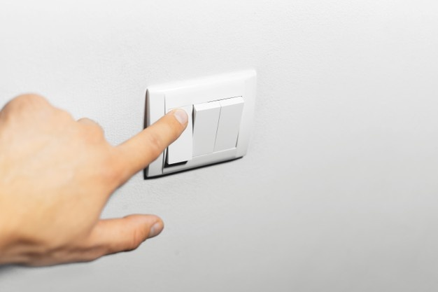

Faça Sua Parte
Economize Água
Só de desligar a torneira ao escovar os dentes, por exemplo, é possível economizar 18 litros de água por dia. Experimente fazer o mesmo quando for ensaboar as mãos ou as louças na pia na hora de lavá-las para economizar ainda mais.

Economize energia
preste atenção para não deixar luzes acesas em cômodos que não estão sendo utilizados e desligue o computador durante a noite. Nas tarefas domésticas, busque ser mais eficiente, por exemplo, esperando acumular roupas o suficiente para encher uma máquina antes de lavá-las.
